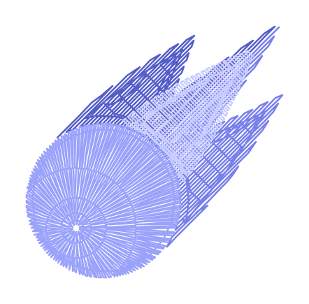
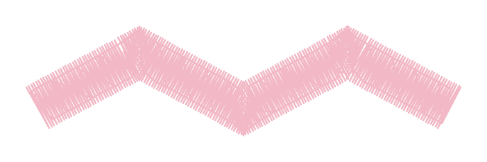

Embroidery digitizing, with imagination
Your ideas.
Made for thread.
Turn drawings, pictures and lettering into embroidery. Shape every stitch in a studio made for your computer or Android tablet.
No account. Your designs stay on your device.

1,856 stitches / 41 × 40 mm
Room to make it yours
One idea. A whole
studio behind it.
Draw with precision, turn a picture into editable shapes, or find the right lettering. Refine it all in the same workspace.
A familiar workspace. An embroidery-first way of thinking.
Explore the studioFollow your thread
A few ways to begin.
Start with what you have.
Make something only you could.
 PICTURE → STITCHES
PICTURE → STITCHESGive a drawing
a little dimension.
Auto-digitize, work piece by piece, or sew a color with the magic wand.
Explore digitizingSay it
with thread.
Names, little messages, your own fonts. Make every letter feel personal.
Meet the lettering tools
IN THE DETAILSFind the right
kind of finish.
From glossy satin to textured fills, explore stitches made for the sew-out.
Open the stitch librarySomething good is taking shape
Come make it with us.
Every feature is open during the beta. Bring an idea, try the tools, and tell us how it goes.